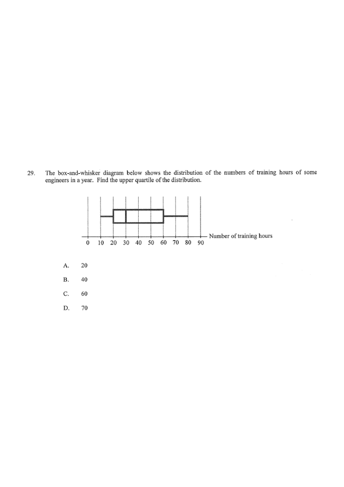

DSE 2023 · 卷二 · 第29題
框線圖的四分位數
統計 · 框線圖 · 選擇題
題目
根據以下的框線圖，求上四分位數。
A.
$20$
B.
$40$
C.
$60$
D.
$70$

原題附圖
題解
第 1 步
讀出五個摘要數
框線圖
\(\text{min},\ Q_1,\ Q_2,\ Q_3,\ \text{max}\)
框的左邊是下四分位數，右邊是上四分位數，中間的線是中位數。
由圖讀得：最小值 $10$、$Q_1=20$、中位數 $Q_2=30$、最大值 $80$。
第 2 步
找出上四分位數
上四分位數 $Q_3$ 對應長方框的右邊，圖中對齊 $60$，故 $Q_3=60$。
第 3 步
一致性檢查
$Q_2=30$ 落在 $[Q_1,Q_3]=[20,60]$ 之內，符合框線圖的要求；四分位數間距 $=60-20=40$（即答案 B 的干擾項）。
答案
C
（$60$）
練習
同類新題
題目.
某組數據的 $Q_1=12$、$Q_3=28$，求四分位數間距。
顯示題解
第 1 步.
$\text{IQR}=Q_3-Q_1$
答案：$16$
‹ 上一題
目錄
下一題 ›